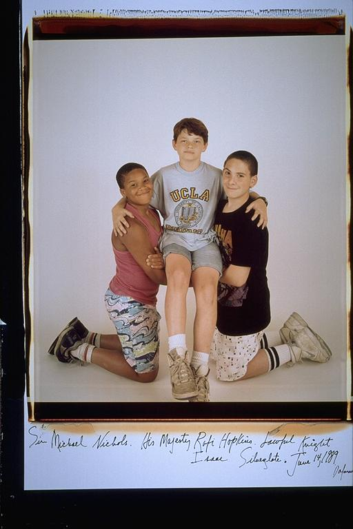

Pals: Boys Who Grew Up Together
elsadorfman.com/pals
Aldo: Cambridge is such a small city that if you live there as a child, you pretty much know everyone. I never hung out with Michael too much, but he lived down the street from me. That's the way our city is; it just keeps on getting smaller, and you seem to see more and more people that you knew as a kid.
Eugene: Michael Nichols-Dunn, Rafi and Isaac. I used to look up to Michael a lot as well. Although he used to pick on me I still admired him. He was tuff and cool. I tried to be down with him. I saw him recently at my church; he just had a little one, Mike, Jr. I'm happy that things are coming around for him and his family.

elsad@comcast.net